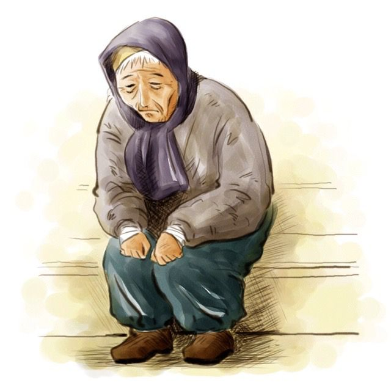
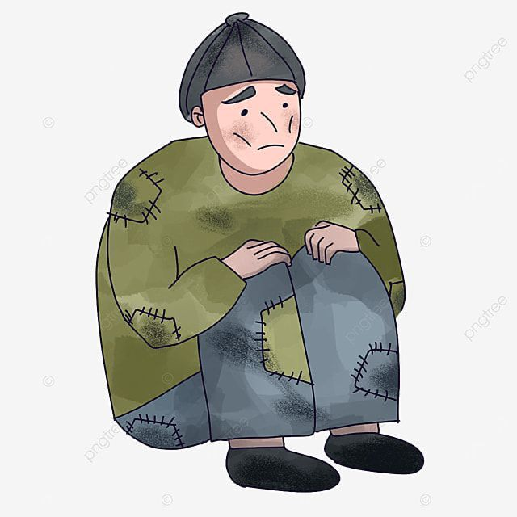
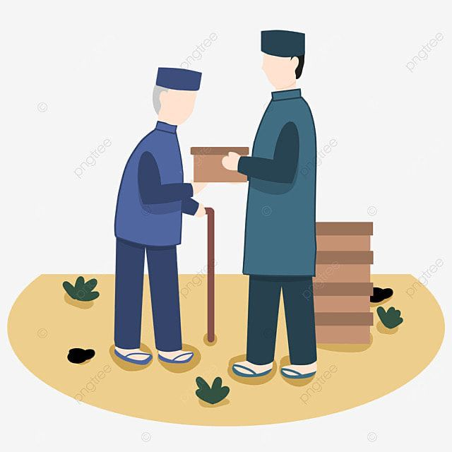

Individuals who have overcome adversity and transformed their lives. Through interviews, testimonials

Get Involved
Step into "The Tunnel" and be part of a movement that aims to uplift the impoverished and create a more equitable society.
